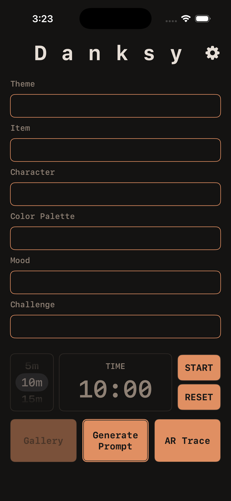
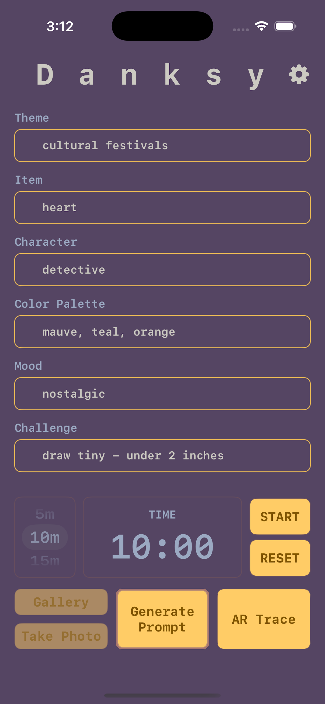
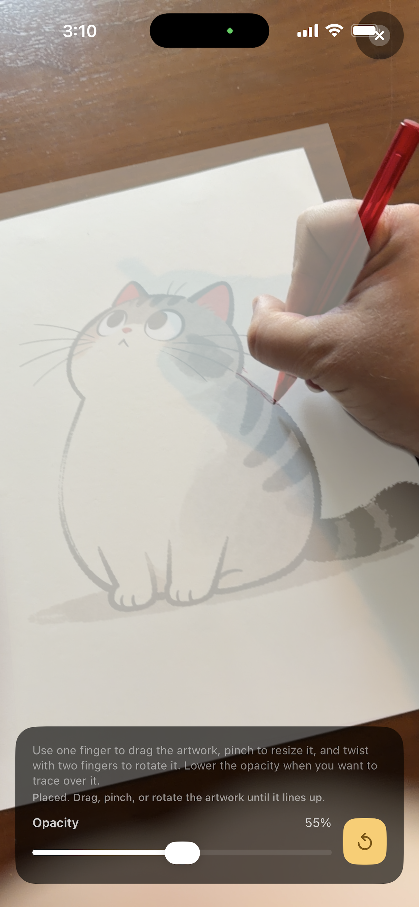
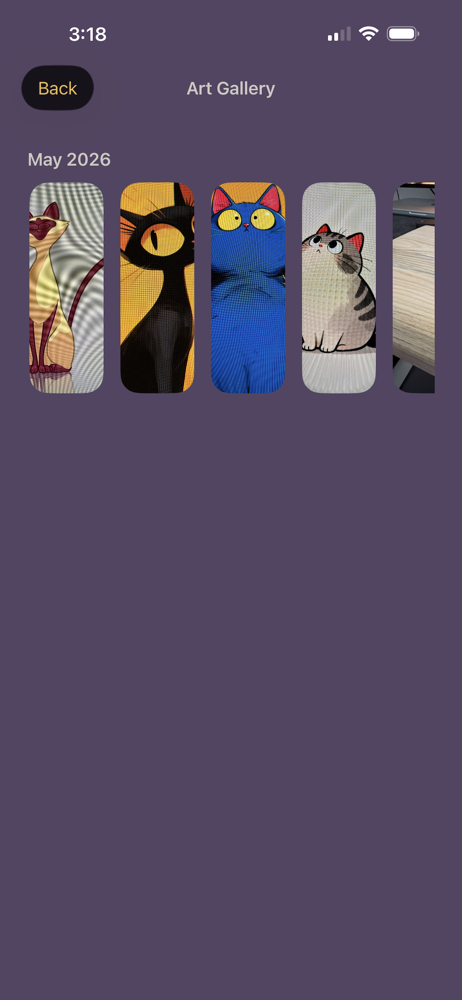

iPhone app for art practice
Danksy is a focused home for generating art prompts, saving finished pieces with their prompts, and tracing reference images with AR when you want a more hands-on sketching session.
Danksy is a focused home for generating art prompts, saving finished pieces with their prompts, and tracing reference images with AR when you want a more hands-on sketching session.
Danksy uses a compact, retro-inspired interface that keeps the prompt workflow front and center.




The app is intentionally small and local so it stays quick to use when you just want to make art.
Danksy reveals theme, item, character, palette, mood, and challenge prompts one at a time so the setup feels playful.
Each saved piece keeps the prompts you used, which makes it easy to revisit a session later.
Select a photo from your library and use Danksy's AR trace view to sketch directly over it.
Art exports are opt-in, and the settings screen lets you clear local data whenever you need a fresh start.
Danksy keeps the creative flow centered on a few useful tools instead of a crowded dashboard.
Your art entries, prompt history, and theme choice live on-device unless you export them yourself.